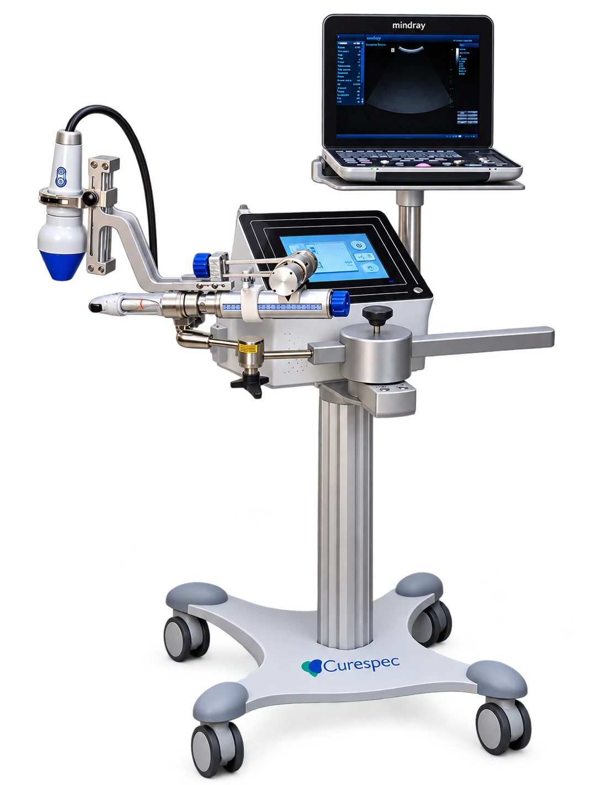
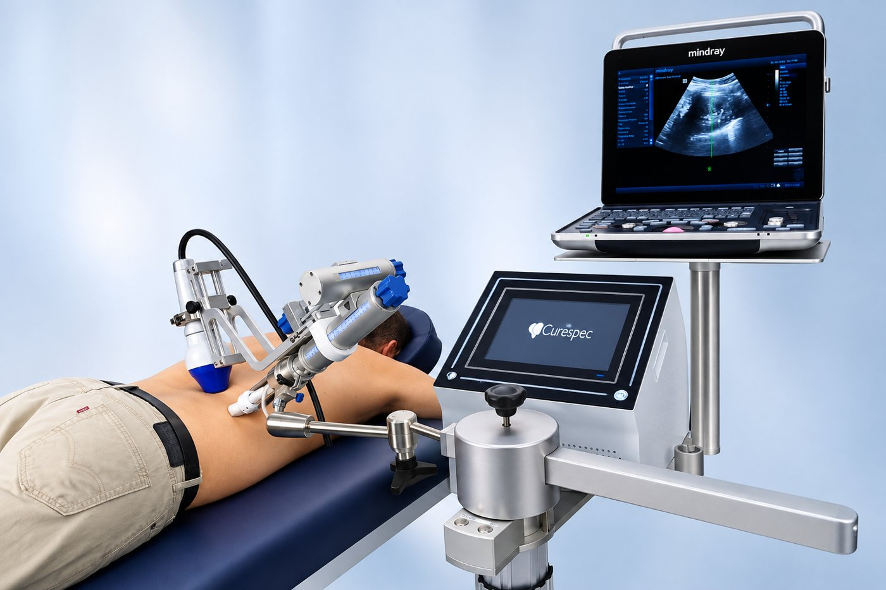

נוטלים תרופות ועדיין מתקשים לאזן את לחץ הדם?
ייתכן שיש דרך נוספת
Nephrospec™ הוא טיפול לא פולשני, ממוקד כליה, שמסייע בהורדת לחץ הדם ובמקביל לשמירה על התפקוד הכלייתי.
המכשיר מאושר אמ"ר לטיפולים בישראללמה לחץ דם גבוה נשאר לא מאוזן?
למרות מגוון רחב של תרופות, רבים מהמטופלים אינם מצליחים להגיע לאיזון מספק של לחץ הדם - כי הבעיה המרכזית, הקשר הישיר בין הכליות ללחץ הדם, לא מטופלת.
כאשר תפקוד הכליות נפגע, לחץ הדם עולה - וכאשר לחץ הדם גבוה לאורך זמן, הוא ממשיך לפגוע בכליות. מעגל מתמשך שמקשה על איזון אמיתי.
טיפול שממוקד בכליות
טיפול לא פולשני הממוקד בכליות, שמטרתו לשפר את זרימת הדם הכלייתית ולסייע באיזון לחץ הדם. הטיפול מתבצע ללא ניתוח וללא אשפוז, וניתן לחזור לשגרה מיד לאחריו.

כך מתבצע הטיפול בפועל

שוכבים בנוחות על מיטת טיפולים, וראש המכשיר ממוקם מעל אזור הכליות לאורך כל המפגש - כ-60 דקות, ללא כאב, ללא הרדמה וללא צורך בהתערבות פולשנית.
ירידה ממוצעת בלחץ הדם הסיסטולי לאחר 12 חודשי מעקב
ממצאי המחקר פורסמו בשנת 2026 בכתב העת Frontiers in Medical Technology. מחקרים ראשוניים; נדרשים מחקרים נוספים לאישור היעילות וההשפעה ארוכת הטווח.
ניסיון קליני ופעילות רפואית בעולם
הטיפול מיושם כיום במספר מרכזים רפואיים ברחבי העולם, כולל ישראל, שווייץ, גרמניה, הפיליפינים, יפן וארצות הברית - ביניהם המרכז הרפואי שערי צדק ושיבא, CHUV בלוזאן ו-Nephronet באטלנטה. עד כה טופלו עשרות מטופלים, עם פרופיל בטיחות חיובי וללא אירועי בטיחות משמעותיים שדווחו.
חווית מטופלים
מטופלים שעברו את הטיפול, בקול שלהם.
חוויות אישיות שחלקו מטופלים. התוצאות עשויות להשתנות מאדם לאדם.
למי הטיפול עשוי להתאים?
מטופלים עם יתר לחץ דם ו/או מחלת כליות כרונית, גם תחת טיפול תרופתי. ההתאמה נקבעת לאחר הערכה רפואית.
✓מתאים לטיפול
- יתר לחץ דם לא מאוזן
- מחלת כליות כרונית, שלבים 3-4
- טרום-דיאליזה
✕לא מתאים לטיפול
- הריון
- סרטן פעיל
- השתלת כליה
- אבנים בכליות
- PKD
- דיאליזה
משאירים פרטים ומתחילים
משאירים פרטים
נחזור אליכם לשיחת היכרות קצרה.
הערכת התאמה
פגישה אצל רופא המרפאה.
סדרת טיפולים ומעקב
בקניון סביונים (מרכז הרופאים, קומה 3), ביהוד-מונוסון, בליווי צוות רפואי לאורך כל התהליך.
השאירו פרטים ונחזור אליכם לתיאום שיחת התאמה
אם אתם או אדם קרוב מתמודדים עם לחץ דם ו/או בעיות בתפקוד הכלייתי שאינם מאוזנים, ייתכן שהטיפול יכול להתאים גם לכם. הטיפולים מתקיימים בקניון סביונים, מרכז הרופאים קומה 3, ביהוד-מונוסון.
כדאי לדעת
כמה זמן נמשך הטיפול?
סדרה של 6 מפגשים, 2 בשבוע, על פני 3 שבועות. כל מפגש נמשך עד כשעה.
האם הטיפול כואב?
הטיפול אינו פולשני ומתבצע ללא הרדמה. מטופלים מתארים תהליך פשוט ולא מכאיב.
האם צריך אשפוז?
לא. הטיפול אמבולטורי, ואפשר לחזור לפעילות יומיומית מיד אחריו.
האם אפשר להמשיך לקחת תרופות?
הטיפול נועד להשתלב כחלק מגישה רחבה לניהול לחץ הדם. כל שינוי בטיפול התרופתי נעשה רק בהנחיית הרופא המטפל.
איפה מתבצע הטיפול?
במרפאה פרטית בקניון סביונים, מרכז הרופאים קומה 3, ביהוד-מונוסון, על ידי צוות רפואי מיומן.
עדיין יש לכם שאלה?
השאירו פרטים ונחזור אליכם בהקדם.